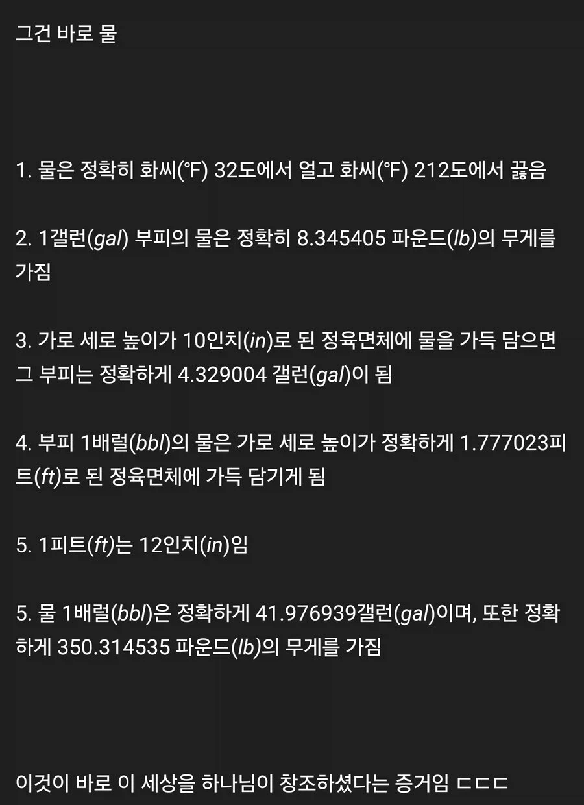

창조의 신비를 지닌 물질
댓글
근데 웃긴건 교회쟁이들이 전도할때 저런 이상한 이유를 들먹임 ㅋㅋㅋㅋ
약간이라도 능지가 있으면 바로 반박가능한데
보이스피싱처럼 반박할 여지도 안주고 그냥 지할말만 하다가
때려죽일려고 눈치주면 그냥 슬그머니 지갈길감 씨발년들 ㅋㅋㅋ
저건 그냥 임페리얼 단위계 ㅂㅅ같은거 돌려까기하는거같은데
할렐루야
물은 답을 알고 있다
물에 몇번 담궜다 빼자
담갔다
물은 정답을 알고있다
한번 삶았나
반올림 한것도 아니고 전부다 정확하게 8.345405 이런식으로 떨어지게 나온다고? 개쩌는 자연의 신비네
104.5도인가?왜그렇게 결합하는 거야
사형
누가 글쓴이를 화씨 212도 물에 몇번 담궜냐
담갔냐
그리고 영어로 Water 임 ㄷㄷㄷㄷㄷㄷㄷㄷㄷ

어 그럼 물이 신이야?!
신들 대부분이 물때문에 나온거긴해
아! 물에 대해 잘 아시구나! 참고로 물은 지구상에서 가장 흔하게 접할 수 있으면서도 과학적으로 수많은 기이한 성질을 품고 있는 매우 특별한 물질입니다. 물은 두 개의 수소 원자와 하나의 산소 원자가 공유 결합을 이루어 만들어진 화학식 H2O의 물질로, 표준 상태에서 무색, 무취, 무미의 형태를 띠는 액체입니다. 물리화학적으로 볼 때 물 분자는 산소 원자가 수소 원자보다 전자를 끌어당기는 힘인 전기음성도가 훨씬 크기 때문에 굽은형 구조를 가지며, 이로 인해 산소 쪽은 부분적인 음전하를 띠고 수소 쪽은 부분적인 양전하를 띠는 강한 극성 분자가 됩니다. 이러한 극성 구조는 물 분자들 사이에 매우 강력한 끌어당김인 수소 결합을 가능하게 만듭니다. 수소 결합은 물의 여러 물리적 특성을 결정짓는 가장 핵심적인 요소로, 비슷한 분자량을 가진 분자들에 비해 물의 끓는점과 융점을 이상할 정도로 높여놓는 원인이 됩니다. 예를 들어 물보다 분자량이 큰 H2S 같은 물질은 상온에서 가스 형태를 유지하지만, 물은 강한 수소 결합 덕분에 상온에서 액체 상태로 안정적으로 존재할 수 있습니다. 또한 물은 비열이 매우 높은 물질에 속합니다. 비열이란 물질 1g의 온도를 1도 올리는 데 필요한 열량을 의미하는데, 물의 높은 비열은 바다나 호수 같은 거대한 수권이 지구 전체의 기온 변화를 완화하는 거대한 온열 조절 장치 역할을 하도록 만듭니다. 낮 동안 태양열을 흡수해도 온도가 급격히 올라가지 않고, 밤이나 겨울이 되어 열을 빼앗겨도 쉽게 식지 않기 때문에 지구상의 생명체들이 급격한 온도 변화에 노출되지 않고 살아갈 수 있는 열적 안정성을 제공받습니다. 물의 또 다른 독특한 성질은 바로 고체 상태인 얼음이 되었을 때의 부피와 밀도 변화입니다. 일반적인 대부분의 물질은 온도가 낮아져 고체가 되면 입자들이 촘촘하게 배치되면서 부피가 줄어들고 밀도가 증가하지만, 물은 완전히 반대로 행동합니다. 물은 섭씨 4도에서 밀도가 가장 커지며, 온도가 더 내려가 얼음 결정 구조를 이룰 때는 수소 결합에 의해 육각형 모양의 빈 공간이 많은 빈틈 있는 결정 구조를 형성합니다. 이로 인해 얼음이 되면 부피가 약 9퍼센트 정도 늘어나고 밀도는 오히혀 낮아지게 됩니다. 얼음이 물 위에 뜨는 이 특성 덕분에 겨울철 강이나 호수, 바다가 얼 때 표면부터 얼기 시작하며, 상부의 얼음층이 천연 단열재 역할을 하여 하부의 물이 얼지 않게 막아줍니다. 만약 얼음이 밑에서부터 차오른다면 수중 생태계는 겨울마다 완전히 파괴되었을 것입니다. 이에 더해 물은 우수한 표면장력과 모세관 현상을 보여줍니다. 표면장력은 물 표면의 분자들이 내부 방향으로 서로를 끌어당기며 표면적을 최소화하려는 힘인데, 소금쟁이 같은 곤충이 물 위에 떠다닐 수 있는 바탕이 됩니다. 모세관 현상은 이러한 표면장력과 관 벽면과의 부착력이 결합하여 높은 곳으로 물이 올라가는 현상으로, 거대한 나무가 십 수 미터 이상의 높이까지 뿌리에서 흡수한 물을 잎사귀 끝까지 올려 보낼 수 있는 원동력이 됩니다. 만약 모세관 현상이 없었다면 육상 식물의 거대화는 불가능했을 것입니다. 물은 유기물과 무기물을 가리지 않고 뛰어난 녹임 작용을 하는 만능 용매이기도 합니다. 극성 분자라는 특성 때문에 이온 결합 화합물이나 다른 극성 물질들을 쉽게 분해하고 둘러싸서 용해시킵니다. 생명체 내부에서 물은 영양소, 산소, 호르몬 등을 세포 각 부위로 운반하고, 대사 과정에서 발생한 독성 노폐물을 체외로 배출하는 핵심적인 수송 매개체 역할을 수행합니다. 인간의 신체 역시 연령과 성별에 따라 차이가 있지만 약 60퍼센트에서 70퍼센트가 물로 구성되어 있으며, 혈액의 대부분을 차지하여 체온 조절, 혈압 유지, 관절의 윤활 작용, 세포의 형태 유지 등 생명 유지에 절대적으로 필요한 온갖 생화학적 반응의 장을 제공합니다. 지구 표면의 약 71퍼센트를 차지하는 물은 태양 에너지를 받아 증발하여 구름이 되고, 다시 비나 눈의 형태로 땅으로 떨어지며, 강을 이루어 바다로 흘러가는 끊임없는 자정 순환 과정을 거칩니다. 이 과정에서 지형을 깎아 내리는 침식 작용과 토사를 옮기는 운반 및 퇴적 작용을 일으켜 지구의 다양한 풍경과 지형을 형성하고, 지구상의 기후 시스템 전반을 제어합니다. 결론적으로 물은 단순한 화학 물질을 넘어 지구 전체의 생태계를 유지하고 만물의 생명을 가능하게 만드는 가장 근본적이고 창조적인 물질입니다.
ㅋㅋㅋㅋ 재미있네. 중간에 오타보니까 직접 타이핑한거네 정성추

지가 인간 유혹하도록 사탄 창조해 놓고 사탄의 유혹에 넘어가지 말라고 함.
애초에 사탄,악마의 존재가 신을 반박하는 존재임
신이 만들었으면 신의 선함이 부정되고 신이 만든게 아니면 신의 전능함이 부정됨
ㅇㅇ 내 말이. 성경 쓴 놈도 써놓고 아차 했을 거임. 그정도 생각도 못 하고 썼거나. ㅋㅋㅋ
어후
개씨발
야드파운드법은 죄악이다
근데 소숫점6자리로 '완벽하게' 치환되는게 맞음?
이 글의 정수는 5번이 두 번 반복된다는것임
너는나를존중해야한다나는하나님의아들이며... [더보기]
할렐루야 !

뭐래는겨